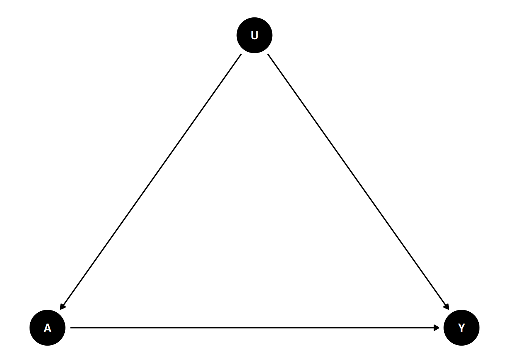
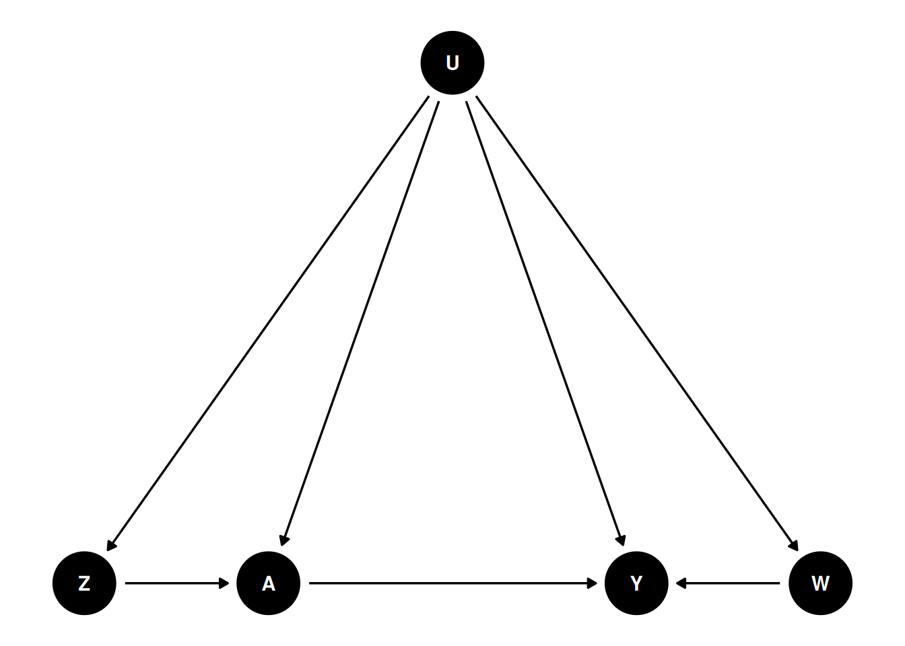
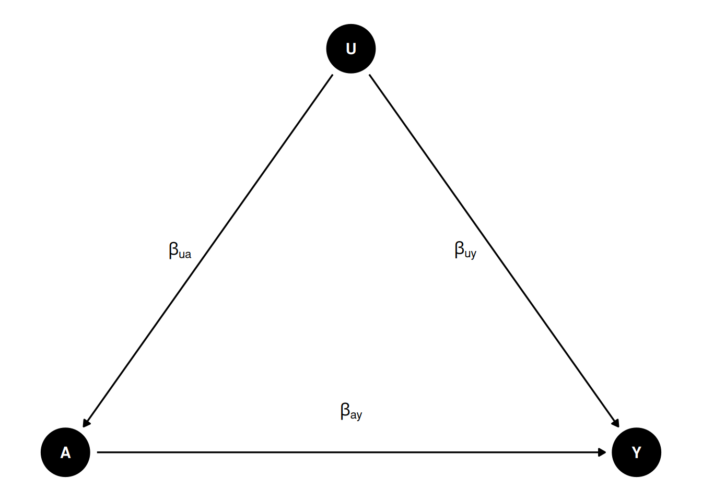
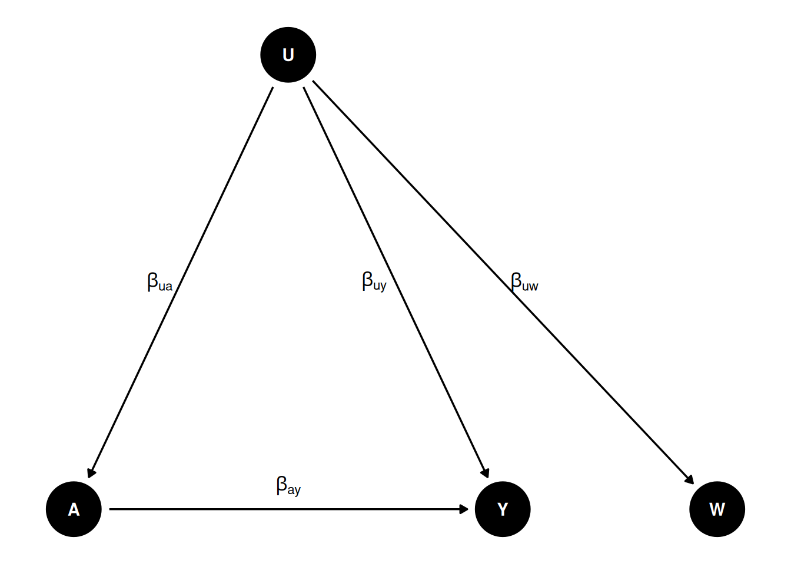
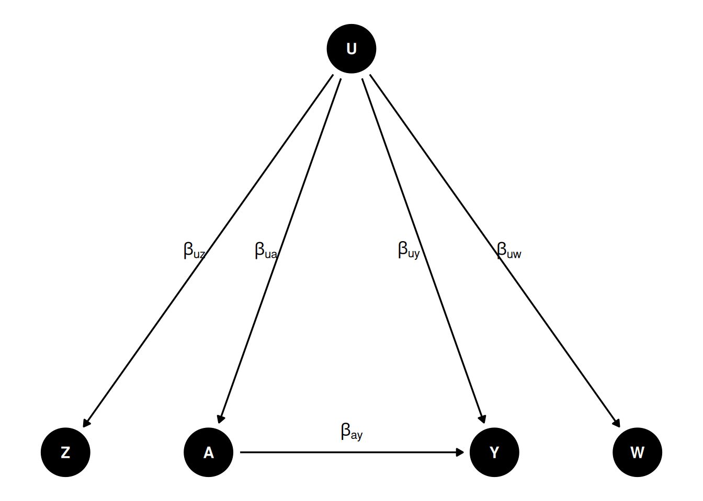
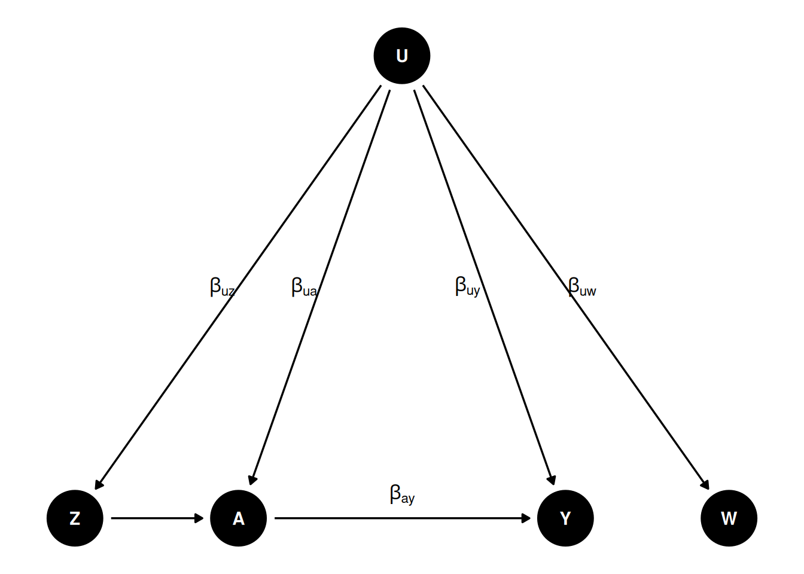

33 Intro to promimal causal inference
This is based on papers of Tchetgen Tchetgen and co-authors, mostly based on Xu Shi’s talk on proximal causal inference.
33.1 Unobserved confounder
Unobserved confounder is the problem for observational studies. Assuming controlling for all relevant confounders (\(X\)), we have an unobserved confounder \(U\) that affects both treatment \(A\) and outcome \(Y\). The causal diagram is as follows:
In this case, we have biased estimates of the treatment effect, regressing \(Y\) on \(A\) controlling for \(X\).
33.2 Proximal causal inference
Proximal causal inference (also called negative controls) is a framework that allows us to estimate the causal effect of treatment \(A\) on outcome \(Y\) while accounting for unobserved confounders.
We’ll need a DAG like this:

Basically we need two proxies for \(U\) to control for confounding. \(Z\) is called Negative Control for Exposure (NCE) and \(W\) is called Negative Control for Outcome (NCO). There is no link form \(Z\) to \(Y\), and no link from \(W\) to \(A\) or \(Z\).
\(Z\) is an NCE if \(Y(a,z) = Y(a)\) and \(Z \perp Y(a) | U\), meaning that \(Z\) satisfies the exclusion restriction that there is no direct link from \(Z\) to \(Y\), and that \(Z\) is independent of \(Y\) given \(U\).
\(W\) is an NCO if \(W(a,z) = W\) and \(W \perp (A,Z) | U\), meaning that \(A\) and \(Z\) have no direct link to \(W\).
33.2.1 Why this works

If we regress \(Y\) on \(A\), then we get \(\beta_{ay} + \beta_{uy} \beta_{ua}\), which is biased. How do we recover \(\beta_{ay}\)?

Suppose we have \(W\) as proxy of \(U\) and \(\beta_{uw} = \beta_{uy}\), then we can get the true effect. We can do regression of \(Y\) on \(A\), and then \(W\) on \(A\). The first regression gives us \(\beta_{ay} + \beta_{uy} \beta_{ua}\), and the second regression gives us \(\beta_{uw} \beta_{ua}\). We can then get \(\beta_{ay}\) from the difference of the two coefficients. This is similar to a DiD setting. Say \(W\) is \(Y_{t-1}\), and assume the effect of \(U\) is the same on \(Y\) and \(Y_{t-1}\), then effect of \(A\) on \(Y\) by the difference of regressing \(Y\) on \(A\) and \(Y_{t-1}\) on \(A\).
However, most likely \(\beta_{uw} \neq \beta_{uy}\). Then we need another proxy \(Z\) of \(U\) to recover the true effect. This is also called “double proxy”, or “double negative control”.

33.2.2 A linear model
Suppose we have the following linear model:
\[ E[Y | A,Z,U] = \beta_{y0} + \beta_{ay} A + \beta_{uy} U \] \[ E[W | A,Z,U] = \beta_{w0} + \beta_{uw} U \] \[ E[U | A,Z] = \beta_{u0} + \beta_{zu} Z + \beta_{au} A \]
\(\beta_{ay}\) is the true effect of \(A\) on \(Y\).
\[ E[Y | A,Z] = \beta_{y0} + \beta_{ay} A + \beta_{uy} (\beta_{u0} + \beta_{zu} Z + \beta_{au} A) \]
\[ E[W | A,Z] = \beta_{w0} + \beta_{uw} (\beta_{u0} + \beta_{zu} Z + \beta_{au} A) \]
From the last two regressions we can recover \(\beta_{ay}\):
If we define \(\delta_{a}^y = \beta_{ay} + \beta_{uy} \beta_{au}\) (regression coefficient of \(A\) on the \(Y\) regression) and \(\delta_{a}^w = \beta_{uw} \beta_{au}\), (regression coefficient of \(A\) on the \(W\) regression), similarly for \(\delta_z^y\) and \(\delta_z^w\), then we have
\[ \beta_{ay} = \delta_{a}^y - \delta_{a}^w \frac{\delta_z^y}{\delta_z^w} \]
Or, we can look at this as a two-stage least squares (2SLS) regression.
We can replace \(U\) with the predicted value of \(W\) from the second equation:
\[ E[Y | A,Z] = \beta_{y0} + \beta_{ay} A + \beta_{uy} E[W | A,Z]\]
We first regress \(W\) on \(A\) and \(Z\), and then regress \(Y\) on \(A\) and the predicted value of \(W\).
33.2.3 A nonparametric model
We don’t have to have a linear model, this can be done with a nonparametric model as well.
\[ E[Y(a)] = E[h(a,W)] \] where \(E[Y | A,Z] = E[h(A,W) | A, Z]\).
That is, we can estimate \(W\) as a function of \(A\) and \(W\), and \(Z\) nonparametrically. This \(h\) function is called outcome bridge function. In the linear case, it is \(h(A, W) = \beta_0 + \beta_a A + \beta_w W\).
33.2.4 How to find proximal variables
Tchetgen Tchetgen and co-authors come up with a Data-driven Automated Negative Control Estimation (DANCE) algorithm to find negative controls. The idea is to use a machine learning algorithm to find the variables that are correlated with the treatment and the outcome, but not with the treatment and the outcome together. This is similar to the idea of finding instrumental variables.
33.3 example
Let’s generated data based on this DAG:

set.seed(123)
n <- 5000
# Set coefficients
b_uw <- 0.5 # effect of U on W
b_uy <- 0.5 # effect of U on Y
b_ay <- 0.5 # effect of A on Y
b_uz <- 0.5 # effect of U on Z
b_ua <- 0.5 # effect of U on A
b_za <- 0.5 # effect of Z on A
U <- rnorm(n)
W <- b_uw * U + rnorm(n) # W is a function of U
Z <- b_uz * U + rnorm(n) # Z is a function of U
A <- b_ua * U + b_za * Z + rnorm(n) # A is a function of U and Z
Y <- b_uy * U + b_ay * A + rnorm(n) # Y is a function of U and A
# A <- rbinom(n, 1, plogis(-1 + U / 2)) # A is a binary treatment
# Create a data frame with the generated variables
data <- data.frame(W = W, Z = Z, A = A, Y = Y)If we run regression of \(Y\) on \(A\), \(Z\), \(W\),
m1 <- lm(Y ~ A + Z + W, data = data)
summary(m1)
Call:
lm(formula = Y ~ A + Z + W, data = data)
Residuals:
Min 1Q Median 3Q Max
-4.5836 -0.7167 0.0005 0.7305 4.4866
Coefficients:
Estimate Std. Error t value Pr(>|t|)
(Intercept) -0.006347 0.015279 -0.415 0.678
A 0.660021 0.014123 46.734 < 2e-16 ***
Z 0.085004 0.016650 5.105 3.43e-07 ***
W 0.132798 0.014165 9.375 < 2e-16 ***
---
Signif. codes: 0 '***' 0.001 '**' 0.01 '*' 0.05 '.' 0.1 ' ' 1
Residual standard error: 1.08 on 4996 degrees of freedom
Multiple R-squared: 0.4556, Adjusted R-squared: 0.4553
F-statistic: 1394 on 3 and 4996 DF, p-value: < 2.2e-16We don’t get the true effect of \(A\) on \(Y\).
If we do the 2sls using \(W\) and \(Z\), then we get the true effect.
# Linear (Y, W) Case
# Perform the first-stage linear regression W ~ A + Z
m1 <- lm(W ~ A + Z, data = data)
# Compute the estimated E[W|A,Z]
S <- m1$fitted.values
# Perform the second-stage linear regression Y ~ A + E[W|A,Z]
m2 <- lm(Y ~ A + S, data = data)
summary(m2)
Call:
lm(formula = Y ~ A + S, data = data)
Residuals:
Min 1Q Median 3Q Max
-4.5477 -0.7309 0.0059 0.7395 4.3715
Coefficients:
Estimate Std. Error t value Pr(>|t|)
(Intercept) -0.005049 0.015408 -0.328 0.743
A 0.489342 0.043210 11.325 < 2e-16 ***
S 1.143480 0.199171 5.741 9.96e-09 ***
---
Signif. codes: 0 '***' 0.001 '**' 0.01 '*' 0.05 '.' 0.1 ' ' 1
Residual standard error: 1.089 on 4997 degrees of freedom
Multiple R-squared: 0.446, Adjusted R-squared: 0.4458
F-statistic: 2012 on 2 and 4997 DF, p-value: < 2.2e-16